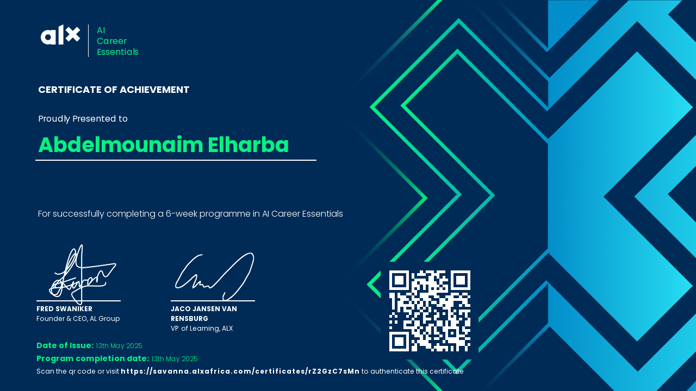

History
TechCon started in 2010 as a small meetup for tech enthusiasts...
TechCon started in 2010 as a small meetup for tech enthusiasts...
Our mission is to inspire innovation and collaboration...
Jane is a pioneer in AI technologies and has spoken at TechCon since 2015...
 sitting at a desk, learning to use artificial intelligence tools. The chil.webp)
John is a leading cybersecurity expert and keynote speaker at TechCon...